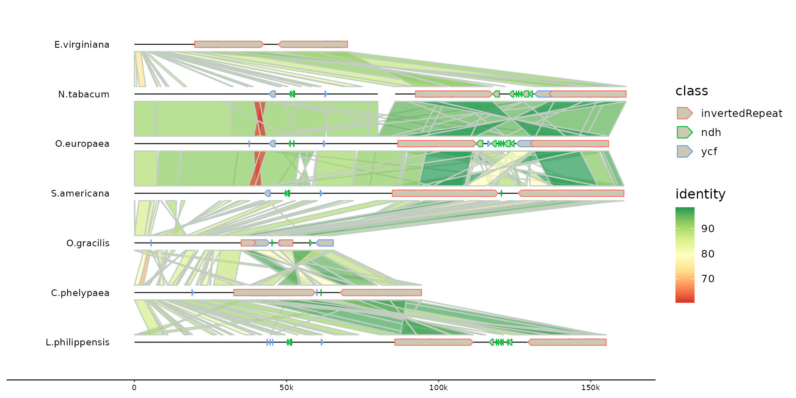

this file contains sequences, links and (optionally) genes
Examples
ali <- read_alitv("https://alitvteam.github.io/AliTV/d3/data/chloroplasts.json")
gggenomes(ali$genes, ali$seqs, links = ali$links) +
geom_seq() +
geom_bin_label() +
geom_gene(aes(fill = class)) +
geom_link()
#> Only saw `type=NA` in genes and will treat everything as `type="CDS"`.
p <- gggenomes(ali$genes, ali$seqs, links = ali$links) +
geom_seq() +
geom_bin_label() +
geom_gene(aes(color = class)) +
geom_link(aes(fill = identity)) +
scale_fill_distiller(palette = "RdYlGn", direction = 1)
p %>%
flip_seqs(5) %>%
pick_seqs(1, 3, 2, 4, 5, 6, 7, 8)
#> Only saw `type=NA` in genes and will treat everything as `type="CDS"`.
